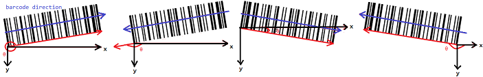
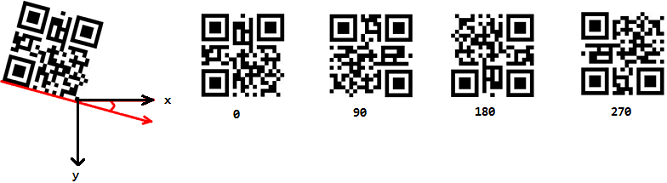
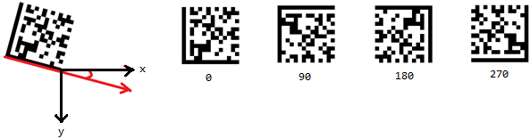

addAngleRange Method
Description
Adds a range of angles (in degrees) to the selection for the barcode search.
Syntax
.addAngleRange(int iFromAngle, int iToAngle);Parameters
-
iFromAngle - The lower bound of angle range. Allowed Values range from 0 to 360.
-
iToAngle - The upper bound of angle range. Allowed Values range from 0 to 360.
Remarks
The barcode reader can search for barcodes in the image in all directions. By default, it will search for barcodes at any angle. However, you can speed up the recognition process by specifying a barcode orientation or an angle range.
The lower bound (iFromAngle) can be higher than the upper bound (iToAngle). For instance, you can set the angle range to [350, 10].
Below shows the angle of the barcode for each type:
1D barcode and PDF417:
QR Code:
DataMatrix:
Return value
bool
true indicates success. false indicates failure.
When false is returned, check getErrorCode or getErrorString for error information.
Example
var dbrObject;
dynamsoft.dbrEnv.init(function () { dbrObject = new dynamsoft.dbrEnv.BarcodeReader(); }, function (errCode, errMsg) { alert(errMsg); });
dbrObject.clearAllAngles();
dbrObject.addAngleRange(0, 45);
dbrObject.addAngleRange(90, 135);
See Also
JavaScript > Class > BarcodeReader > addAngle
JavaScript > Class > BarcodeReader > clearAllAngles
JavaScript > Enumeration > EnumBarcodeOrientationType